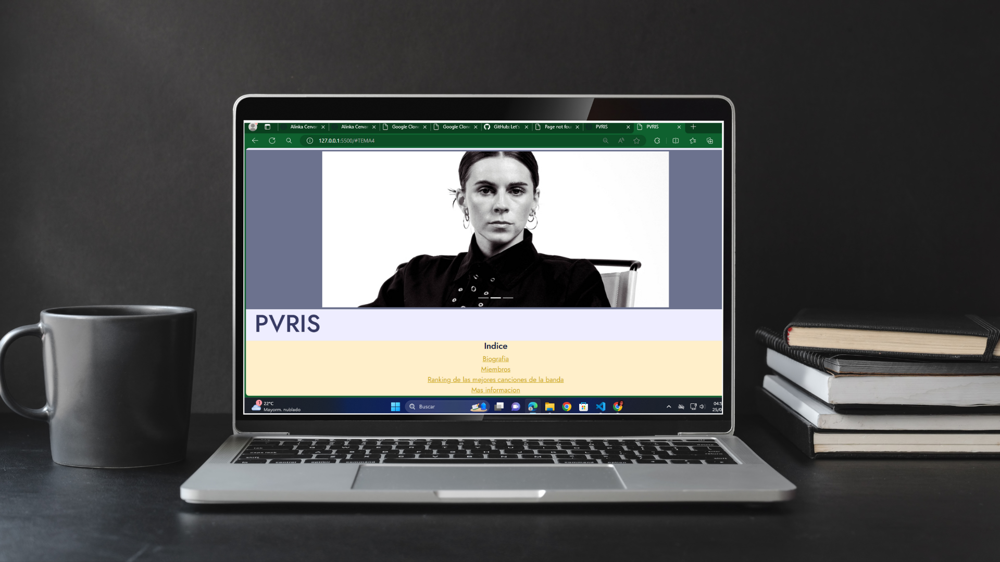

Mis proyectos recientes
Estos son algunos proyectos que he creado recientemente...

.png)
Soy Alinka, actualmente estudiante de la carrera de Tecnologías de la Información y Comunicación. Mi pasión por la tecnología me ha llevado a involucrarme en diversas áreas, desde el desarrollo de aplicaciones y la creación de páginas web hasta la robótica. He tenido la oportunidad de compartir este entusiasmo como instructora en Tecnolochicas, donde he guiado a chicas de entre 10 y 17 años en estos fascinantes temas.
Además de mi formación académica y experiencia en tecnología, trabajo a tiempo parcial en la universidad, donde me encargo de tejer muñecos y realizar entregas. Esta experiencia me ha permitido desarrollar habilidades adicionales y mantenerme activa en mi entorno académico.
Estudiante
Soy estudiante de Ingeniería en Tecnologías de la Información en el Instituto Tecnológico de Apizaco, especializándome en Desarrollo y Gestión Ágil de Proyectos de Software. Esta especialidad me capacita en metodologías ágiles y en la gestión efectiva de proyectos tecnológicos.
Cursos
He participado en diversos cursos para ampliar mis habilidades y conocimientos. He completado el Becalos English Challenge y he continuado mis estudios de inglés en el Centro de Lenguas Extranjeras del Tecnológico de Apizaco. También he tomado un curso de Diseño de Páginas Web en Tecnolochicas Pro. Además, he cursado la carrera tecnica de Instrumentación Industrial en el Cecyte Plantel 07.
Desarrollo Web
He trabajado en varios proyectos web, incluyendo la creación de clones de Google y una página web para una banda musical. Durante estos proyectos, he aprendido a manejar Bootstrap y CSS, lo que me ha permitido diseñar interfaces responsivas y visualmente atractivas. Estas experiencias me han ayudado a desarrollar un buen entendimiento de cómo estructurar y estilizar páginas web de manera efectiva.

Alinka ha demostrado ser una estudiante excepcional, destacándose por su dedicación, compromiso y actitud positiva hacia el aprendizaje. Su rendimiento académico es consistente y sobresaliente, y su capacidad para trabajar en equipo y apoyar a sus compañeros es admirable.
Jennifer Atenas Franco
Mentora en Tecnolochicas Pro
Alinka es una estudiante e instructora muy comprometida, tiene iniciativa y organización, además de una gran perseverancia en cada cosa que hace. Fue una gran compañera de trabajo que sabe trabajar en equipo y resolver problemas de la manera más efectiva e innovando en el campo de STEM además de en la enseñanza, haciéndola sobresaliente en el área en la que esté.
Gretel Montiel Alva
Instructora Tecnolochica

Alinka se ha destacado por su notable comprensión en los principios clave para el desarrollo de páginas web, acompañada de habilidades que le permitieron aplicar estos conocimientos de manera efectiva. Su búsqueda continua de crecimiento personal y profesional la convierte en una persona perseverante y comprometida.
Lizeth Sarahi Sánchez Cano
Química Farmacobiologa
Alinka ha sobresalido no solo en el aprendizaje de conceptos fundamentales en Sistemas computacionales, sino también en la aplicación práctica de estos conocimientos. Su capacidad para abordar problemas de manera innovadora y eficiente es realmente admirable, demostrando no solo sus habilidades técnicas, sino también su capacidad para trabajar en equipo y liderar a sus compañeros hacia el éxito.
Margarita Estrada Rodriguez
Embajadora de Chicas en Tecnología
Alinka es una estudiante curiosa y avida por aprender. Su facilidad para adquirir nuevos conocimientos, junto con su dedicación y responsabilidad en cada tarea que asume, la convierten en un ejemplo a seguir. Su capacidad para enfrentar desafios y su constante deseo de superarse aseguran que seguira alcanzando grandes logros.
Maria Fernanda Cervantes Perez
Emprendedora Artesanal